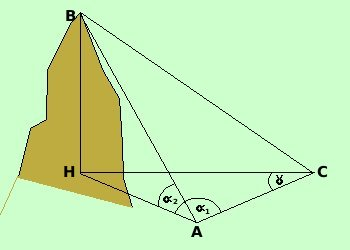

|
 Supponiamo che il segmento AC sia orizzontale: in tal caso il triangolo ACH giace sul piano orizzontale. Misuriamo La distanza AD L'angolo HAC = L'angolo ACH = L'angolo BAH = Posso prima risolvere il triangolo ACH per trovare il valore di AH poi nel triangolo rettangolo AHB conosco, oltre l'angolo retto, un angolo ed un lato quindi posso risolverlo e trovare BH Considero il triangolo ACH ne conosco due angoli ed un lato e quindi posso risolverlo: Angolo AHC = 180° - ( possiamo calcolare AH con il teorema dei seni
Considero poi il triangolo rettagolo BAH Per le relazioni sui triangoli rettangoli ho BH = AH tang
|